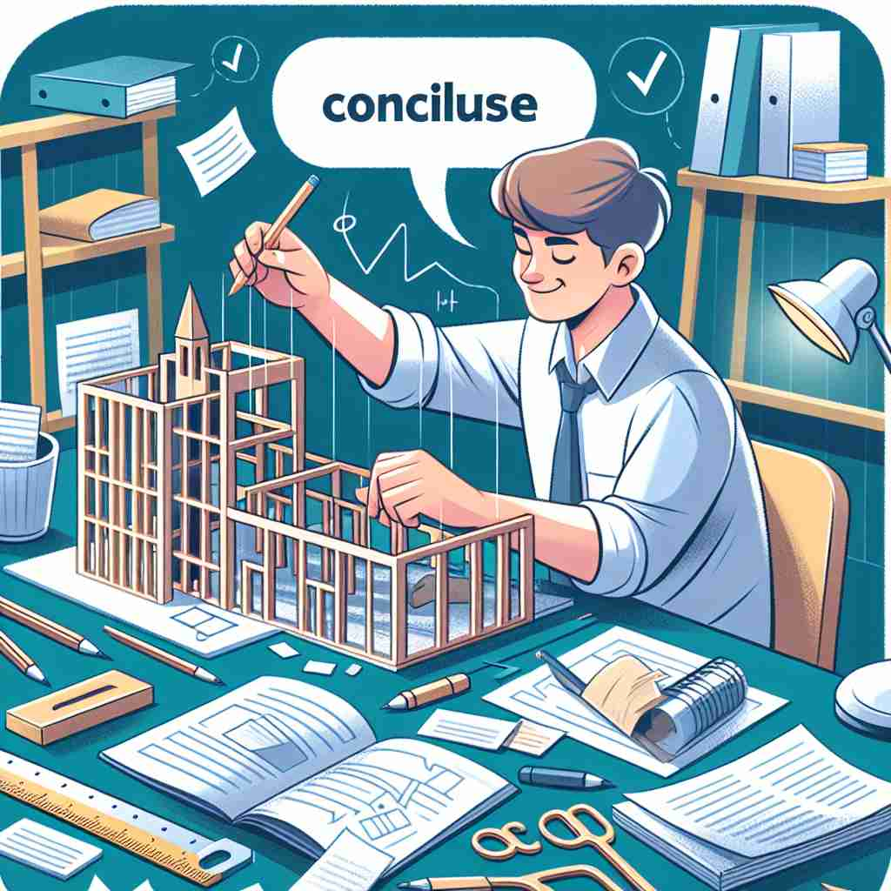

💬 At the end of the book, the author will conclude a story. 在书的结尾，作者将总结一个故事。

💬 The architect needs to conclude the project before the deadline. 建筑师需要在截止日期之前完成项目。
💬 At the end of the book, the author will conclude a story. 在书的结尾，作者将总结一个故事。
💬 The architect needs to conclude the project before the deadline. 建筑师需要在截止日期之前完成项目。
🧠 想象'conclude'是一条线的终点。无论是活动的结束、思考的完成、协议的达成，还是演讲的收尾，都可以看作是某个过程到达了它的终点。这个'结束'的核心概念贯穿了'conclude'的各种用法，有助于你更好地理解和记忆这个词的多重含义。
🔈 [kən'kluːd]
🗝️ v. to bring or come to an end 结束或终结
🎭 在一个正式的会议室里，公司的年度总结会议正在进行。经理起身，用清晰而坚定的语气说道：“感谢大家的努力，这次会议就到这里，期待明年的更多成就。”伴随着大家的掌声，会议正式结束。这一场景生动地体现了'conclude'作为将某事结束的含义。
💬 The meeting concluded at 5 pm. 会议于下午5点结束。
🌳 由前缀 'con-'（一起）和词根 'clud'（关闭）组成，结合起来表示 '结束、总结、得出结论'。
💡 记忆 'conclude' 时，可以联想为 '一起关闭' 的场景，比如会议结束时会合上笔记本和资料，从而得出最终结论的过程。
🗝️ v. to reach a decision or opinion by reasoning 通过推理得出结论或观点
🎭 在一个侦探小说的情节中，侦探正在分析线索。他拨开迷雾，连接事件的每一个细节。最后，他拍案而起，眼中闪烁智慧的光芒，坚定地说：“我已经得出结论，这起案件是一起精心策划的骗局。”这个场景展示了'conclude'作为通过推理得出结论的含义。
💬 Based on the evidence, we concluded that he was innocent. 根据证据，我们得出结论，他是无辜的。
🤔 通过推理"结束"思考过程，得出结论
🗝️ v. to arrange or settle definitely 安排或确定
🎭 在一个宁静的庭院里，两位邻居正在商量围栏的修建事宜。他们经过友好的交流，并在协议上签字后，握手言和，心满意足地微笑。这个场景展示了'conclude'作为安排或最终确定的含义。
💬 They concluded a peace treaty after months of negotiations. 他们经过几个月的谈判签署了一项和平条约。
🤔 结束"讨论或协商，达成最终安排
🗝️ v. to say in conclusion 总而言之
🎭 在一个动人的婚礼上，新郎举起酒杯，面向他的亲朋好友，充满感激地说：“感谢大家的支持与祝福，让我们共同举杯，庆祝这个难忘的时刻。”他的致辞进入尾声，完美地展示了'conclude'作为一个结语的含义。
💬 To conclude, I would like to thank everyone for their attention. 最后，我想感谢大家的关注。
🤔 用最后的话语"结束"演讲或文章